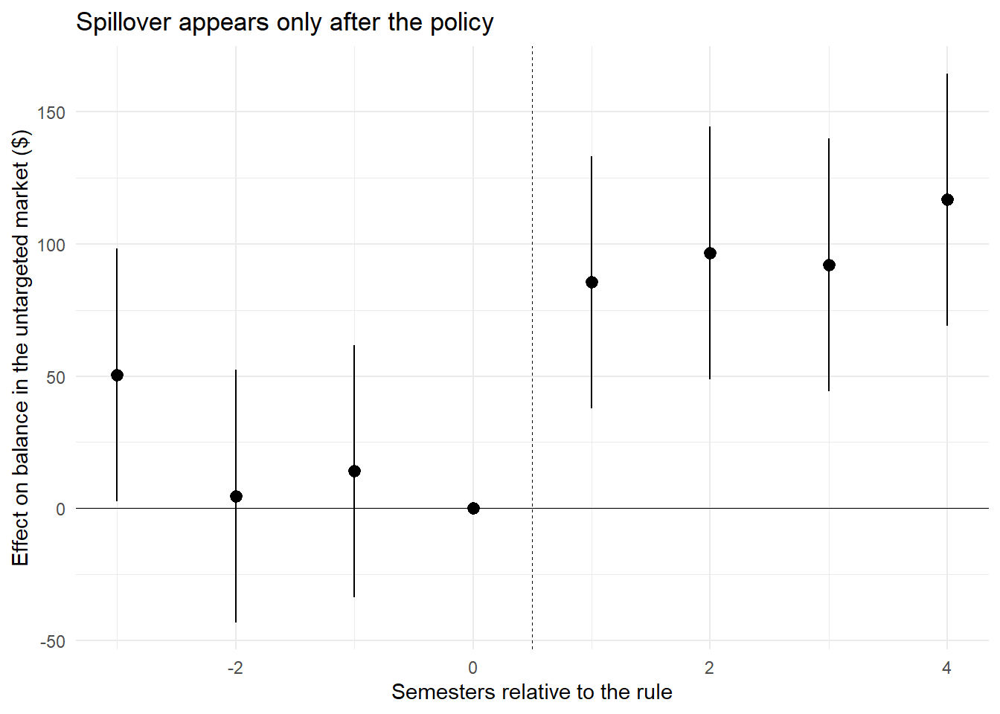

flowchart TB N["Consumer need<br/>(liquidity, information,<br/>convenience) persists"] --> P["Policy raises the effective<br/>cost of instrument A"] P --> QA["Targeted market:<br/>use of A falls by tau_A"] P --> QB["Untargeted market:<br/>use of B rises by tau_B"] QA --> EV["Commissioned evaluation:<br/>reports tau_A only"] QB -.->|"unmeasured"| EV EV --> CL["Conclusion: policy worked"] QB --> TR["Truth depends on rho = tau_B / |tau_A|<br/>and on whether B is<br/>better or worse for the consumer"]
69 Policy Evaluation and Cross-Market Spillovers
A policy is evaluated on the market it names. A rule that restricts credit-card marketing is judged by what happens to credit cards; an advertising ban is judged by advertising; a privacy regulation is judged by tracking. This is the natural way to audit an intervention, and it is very often the wrong way, because the consumer whose behavior the rule changed did not stop having the need that drove the behavior. She satisfied it somewhere else. The evaluation that looks only at the targeted market records the intended effect at full strength and the unintended effect not at all.
This chapter is about designing evaluations that see both. Its running case is Section 304 of the Credit Card Accountability, Responsibility, and Disclosure (CARD) Act of 2009, which effectively eliminated the marketing of credit cards on and around U.S. college campuses. The provision worked: card holding among students fell sharply. It also did something no one legislated. Students who needed liquidity and no longer reached for a card reached instead for a student loan, and student-loan balances rose by roughly eight percent on average and fifteen percent among students from the least affluent neighborhoods (Brown, Grodzicki, and Medina 2026). Neither number is visible in a study of credit cards.
The pattern generalizes far past consumer finance, and it is the reason this material belongs in a marketing-research book rather than only in a public-finance one. Almost every consequential regulation of the last two decades restricts a marketing instrument—what may be advertised, to whom a firm may target, which data may be joined, which defaults may be pre-set, how a price may be displayed. Restricting an instrument does not remove the demand it was serving; it reroutes that demand into whichever substitute instrument, channel, or product the rule left standing. A marketing scientist is unusually well placed to see the reroute, because the substitution structure of consumer choice is our subject matter.
By the end of this chapter you should be able to state a spillover as a formal estimand rather than a worry, distinguish the four mechanisms that generate one, design an identification strategy in which the untargeted market is observed with a credible control group, and recognize when a published policy evaluation has measured only half of its own effect.
69.1 Why Single-Market Evaluation Fails
Consider a consumer with a need \(n\) that can be met by instruments \(j \in \{A, B\}\)—two credit products, two channels, two information sources. A policy \(P\) raises the effective cost of instrument \(A\): it bans the advertising that made \(A\) salient, deletes the tracking that made \(A\) well-targeted, or removes the campus table at which \(A\) was sold. Write the consumer’s use of each instrument as \(q_A\) and \(q_B\). The evaluation that a regulator commissions estimates
\[ \tau_A \;=\; \mathbb{E}\!\left[q_A(1) - q_A(0)\right], \tag{69.1}\]
the average effect of the policy on the targeted instrument, where \(q_A(1)\) and \(q_A(0)\) are potential outcomes with and without the rule. What the regulator wants is the effect on the underlying welfare-relevant outcome, which depends on both instruments. The missing quantity is the spillover estimand
\[ \tau_B \;=\; \mathbb{E}\!\left[q_B(1) - q_B(0)\right], \tag{69.2}\]
and the ratio \(\rho = \tau_B / |\tau_A|\)—the substitution rate—is the single number that determines whether the policy moved consumers out of a market or merely moved them between markets. When \(\rho \approx 0\) the policy suppressed the behavior. When \(\rho \approx 1\) it relabeled the behavior. Every intermediate value is a mix, and nothing in the estimate of \(\tau_A\) identifies which case obtains.
The literature on choice architecture has been explicit that this is a systemic gap rather than an occasional oversight. Surveys of the nudge evidence base note that interventions are overwhelmingly evaluated on the dimension they target, so that offsetting movements on non-targeted dimensions—which can shrink, erase, or invert the measured benefit—remain largely unobserved (Beshears and Kosowsky 2020). The behavioral-spillover literature makes the same point from the psychological side: an intervention that changes one behavior systematically changes related ones, sometimes reinforcing the intended direction and sometimes licensing its opposite (Dolan and Galizzi 2015; Truelove et al. 2014).
Figure 69.1 shows the accounting. A policy evaluation is a claim about a consumer’s total behavior; measuring one market is a claim about one branch of it.
Two clarifications keep the framework honest. First, a spillover is not automatically a failure. In the CARD Act case the substitution ran from a high-rate revolving product to a low-rate, subsidized one; the entire welfare question is whether the destination is better than the origin, and Chapter 71 is devoted to answering it. Second, the sign of the welfare effect and the sign of the behavioral effect are different objects. A policy can raise borrowing (a behavioral increase that reads as a failure in the press release) while raising welfare (because the borrowing is cheaper), which is precisely what the anchor paper concludes.
69.2 A Taxonomy of Spillovers
“Spillover” names at least four distinct phenomena, with different identification requirements and different remedies. Confusing them is the most common conceptual error in this literature.
Cross-market substitution. The same consumer meets the same need through a different product. This is the CARD Act case: the student who would have revolved on a card takes a larger loan. It is also the soda-tax case, where taxed beverages give way to untaxed ones inside and outside the taxing jurisdiction (Seiler, Tuchman, and Yao 2020), and the junk-food case, where banning advertising in one category shifts demand across categories (Dubois, Griffith, and O’Connell 2018). Identification requires observing the same consumers in the untargeted market.
Behavioral spillover. The intervention changes a psychological state—attention, moral licensing, self-image, perceived permission—that then alters behavior in a domain the policy never touched. A payment nudge that reduces revolving on the targeted card can reduce or increase spending on a different card held by the same person (Medina 2021). Here the two behaviors need not be substitutes in any budget sense; the link runs through the consumer’s psychology (Dolan and Galizzi 2015).
Equilibrium and supply-side response. Firms re-optimize. When tracking is restricted, advertisers reallocate budget, ad prices move, and the composition of surviving vendors changes; the measured effect on any one firm confounds the consumer response with the industry’s (Johnson, Shriver, and Goldberg 2023; Aridor, Che, and Salz 2023). Recommender systems generate the same structure endogenously: an algorithm designed to improve individual matches can concentrate aggregate sales, a system-level consequence invisible in individual-level evaluation (Fleder and Hosanagar 2009).
The supply-side response can also relocate an effect across margins rather than across markets, and this is the variant most likely to be missed, because the harmed group is the group the rule was written to help. Brazil’s disability employment quota is the sharpest available case. A 2012 reform put real enforcement behind a quota that had long been ignored, and it worked on the margin the statute names: hiring of people with disabilities rose, most steeply at firms that had been furthest out of compliance. But firms meeting a headcount target re-optimized everything the target did not fix. Among workers with disabilities already employed, job stability improved while wage gaps widened and promotion rates slowed relative to non-disabled coworkers, and a 2015 nondiscrimination statute did not undo the damage (Nardi et al. 2026). A representation metric and a treatment-of-incumbents metric moved in opposite directions inside the same firms. An evaluation that reports only the first records a success; the policy’s own beneficiaries would report something else. The lesson generalizes to any mandate stated as a count—diverse-supplier targets, local-content rules, minimum-shelf-space regulations, platform quotas for a favored seller class—and it is the market-design analogue of the surrogate-metric problem in Chapter 30: the quantity that is easy to legislate is rarely the quantity that carries the welfare.
Interpersonal spillover (interference). The treatment of one consumer changes the outcomes of another—through networks, through congestion, through marketplace prices. This is a violation of the stable-unit-treatment-value assumption rather than a second market, and it is treated in Chapter 42.
Table 69.1 summarizes what each type demands of a research design.
| Type | Mechanism | What must be observed | Typical design |
|---|---|---|---|
| Cross-market substitution | Same need, different product | Same units, both markets, pre/post | DiD or triple-diff on the untargeted outcome |
| Behavioral spillover | Changed attention, licensing, self-concept | An untreated domain plus a mechanism measure | Experiment with pre-registered secondary domain |
| Equilibrium / supply side | Firm re-optimization of prices, allocation, and unregulated margins | Market-level aggregates, entry and exit; incumbent outcomes on the margins the rule leaves free | Market-level DiD, structural supply model |
| Interpersonal (interference) | Treatment of \(i\) affects \(j\) | Network or geography linking units | Cluster or saturation randomization |
69.3 Identification: Finding a Control Group in the Untargeted Market
The hard part of a spillover study is rarely the outcome. Student-loan balances are well measured. The hard part is that the policy applied to everyone in the affected population at the same moment, so there is no obvious untreated comparison.
The design in Brown, Grodzicki, and Medina (2026) solves this with an exposure argument that is worth studying as a template. Section 304 removed lenders from campus. Therefore the intensity of a student’s exposure to card marketing depends on how much time she had already spent on campus when she made her borrowing decision. Incoming freshmen make their student-loan choices before arriving; they were never exposed to on-campus card marketing in either regime. Continuing sophomores and juniors were exposed before the rule and not after. Freshmen are the control group, continuing students the treated group, and the comparison is a difference-in-differences in which the “untreated” units are inside the same institution, the same semesters, and the same financial-aid system.
Three refinements make the design credible, and each is a transferable lesson.
Drop the ambiguously treated. Students enrolled in the two academic years immediately after passage were partially exposed—they had seen campus marketing as freshmen even if it was gone by their sophomore year—and financial-aid packages are locked months before a semester begins, so even an instantly reacting aid office could not have adjusted. Those cohorts are excluded rather than assigned to either group. A design that forces every observation into treated or control buys sample size with contamination.
Exclude the population treated by a different provision of the same law. Seniors are mostly over 21, and the CARD Act’s ability-to-pay and co-signer rules applied differently to them. Including seniors would blend the on-campus marketing nudge with a separate credit-supply restriction. When a statute has several sections, the analysis sample must be the population for which only the section of interest binds.
Bound the calendar. The post-period ends before the 150-percent rule of the Moving Ahead for Progress in the 21st Century Act changed subsidized-loan eligibility, because that rule altered both the sequencing of loan take-up inside the aid office and the treatment of first-time borrowers—who are disproportionately the control group. A later confounding policy that differentially hits the control group is more dangerous than one that hits both groups.
The estimating equation is a non-parametric event study rather than a single post-period dummy:
\[ y^{k}_{i,s} \;=\; \alpha^{k}_{s,q} \;+\; \alpha^{k}_{c} \;+\; \sum_{s \neq s_0} \beta^{k}_{s}\,\mathbb{1}(\text{continuing})_{i,s} \;+\; \gamma^{k} X_{i,s} \;+\; \epsilon^{k}_{i,s}, \tag{69.3}\]
where \(i\) indexes students, \(s\) semesters, \(k \in \{\text{take-up},\ \text{balance}\}\), \(\alpha^{k}_{s,q}\) is a semester-by-income-quartile fixed effect, \(\alpha^{k}_{c}\) a class (freshman/sophomore/junior) fixed effect, and \(s_0\) the omitted pre-treatment semester. Letting the treatment coefficients vary semester by semester does double duty: the pre-period coefficients test the parallel-trends assumption, and the post-period coefficients show whether the effect is a level shift, a trend break, or a transient.
The semester-by-quartile fixed effect deserves comment. Because the CARD Act coincided with the financial crisis, a design with only semester effects would attribute to the policy any recession shock that hit low-income students harder. Interacting the time effect with income quartile absorbs exactly that, at the cost of no longer identifying the average level effect of income. This is the general move: absorb the confound at the level at which it varies, and accept the loss of the parameters it collinearly consumes.
Figure 69.2 lays out the design.
flowchart TB
R["Section 304 removes card<br/>marketing from campus<br/>(national, one date)"] --> EX{"Was the student exposed to<br/>on-campus marketing before<br/>the borrowing decision?"}
EX -->|"No: incoming freshmen<br/>decide before arriving"| C["Control group"]
EX -->|"Yes pre-rule, no post-rule:<br/>sophomores and juniors"| T["Treated group"]
EX -->|"Partially: cohorts in the<br/>two transition years"| D["Dropped as<br/>ambiguously treated"]
EX -->|"Treated by other CARD Act<br/>sections: seniors over 21"| D2["Dropped to isolate<br/>the marketing provision"]
C --> DD["Event-study DiD on the<br/>UNTARGETED outcome:<br/>student-loan balances"]
T --> DD
DD --> H["Triple difference by ZIP income:<br/>does the substitution concentrate<br/>where liquidity need is greatest?"]
69.3.1 The heterogeneity test as a specification test
A spillover estimate is more convincing when the model predicts where it should be largest and the data agree. If the mechanism is liquidity substitution, then students with the least outside liquidity should substitute most, and students with enough family resources to have no shortfall should not substitute at all. The triple-difference specification tests this:
\[ y^{b}_{i,s} \;=\; \alpha^{b}_{s,q} + \alpha^{b}_{c} + \beta^{b}_{1}\mathbb{1}(\text{cont.},\text{post})_{i,s} + \sum_{q=2}^{4}\beta^{b}_{q}\,\mathbb{1}(\text{cont.},\text{post})_{i,s}\times\mathbb{1}(Qtr = q)_{i} + \gamma^{b} X_{i,s} + \epsilon^{b}_{i,s}. \tag{69.4}\]
In the CARD Act data the gradient is monotone and ends at zero: about $227 more borrowed per semester in the bottom ZIP-income quartile—roughly 15 percent of that group’s pre-policy mean, and about $454 on an annual basis—then $130 in the second quartile, $62 in the third, and a statistically indistinguishable-from-zero $-4 in the top (Brown, Grodzicki, and Medina 2026). A null in the group your theory says should be null is worth more than another significant coefficient, because a confound like the recession has no reason to respect the theory’s ordering.
This is also where a spillover study earns its distributional claim. The average effect (8 percent) understates what happened to the students the policy was written to protect (15 percent), and the top quartile’s zero rules out a broad “everyone borrowed more after 2009” story.
69.4 Simulating the Design
The following simulation builds a student-semester panel with the structure above: a control class that is never exposed, a treated class that loses card access after the rule, heterogeneous substitution by income quartile, and a recession shock that hits low-income students in both groups. It then shows what a naive analysis of the targeted market alone would report, what the event study recovers, and what happens if the semester-by-quartile fixed effect is omitted.
Code
set.seed(66)
simulate_spillover_panel <- function(n_students = 12000,
semesters = 1:8,
policy_at = 5,
card_drop = 0.30,
sub_by_q = c(230, 130, 60, 0),
recession = c(-140, -90, -40, 0)) {
# One row per student-semester. Class is fixed within a student.
q <- sample(1:4, n_students, replace = TRUE)
cont <- rbinom(n_students, 1, 0.65) # 1 = sophomore/junior (treated)
base <- c(1442, 1397, 1318, 878)[q] # pre-policy mean balance by quartile
grid <- expand.grid(id = seq_len(n_students), sem = semesters)
grid$q <- q[grid$id]
grid$cont <- cont[grid$id]
grid$post <- as.integer(grid$sem >= policy_at)
grid$base <- base[grid$id]
# Recession hits low-income students in BOTH groups: a pure confound.
shock <- recession[grid$q] * grid$post
# The spillover: only continuing students, only post-policy.
spill <- sub_by_q[grid$q] * grid$cont * grid$post
grid$balance <- grid$base + shock + spill +
rnorm(nrow(grid), 0, 900)
# Targeted market: card use falls for continuing students post-policy.
p_card <- 0.80 - card_drop * grid$cont * grid$post
grid$has_card <- rbinom(nrow(grid), 1, pmin(pmax(p_card, 0.01), 0.99))
grid$sem_q <- interaction(grid$sem, grid$q, drop = TRUE)
grid$semf <- factor(grid$sem)
grid
}
panel <- simulate_spillover_panel()
str(panel[, c("id", "sem", "q", "cont", "post", "balance", "has_card")])
#> 'data.frame': 96000 obs. of 7 variables:
#> $ id : int 1 2 3 4 5 6 7 8 9 10 ...
#> $ sem : int 1 1 1 1 1 1 1 1 1 1 ...
#> $ q : int 1 3 1 4 4 2 1 3 3 3 ...
#> $ cont : int 0 0 1 0 1 0 1 1 1 0 ...
#> $ post : int 0 0 0 0 0 0 0 0 0 0 ...
#> $ balance : num 279 1066 2117 -729 572 ...
#> $ has_card: int 1 1 1 1 1 1 1 1 1 1 ...The naive single-market evaluation looks decisive and says nothing about the loan market:
Now estimate the spillover on the untargeted outcome, first without and then with the semester-by-quartile absorption. The difference is the recession confound.
Code
# (a) Semester effects only: the recession contaminates the estimate because it
# is correlated with income quartile, which is correlated with treatment mix.
fit_naive <- lm(balance ~ cont * post + semf + factor(q), data = panel)
# (b) Semester-by-quartile effects: absorbs any shock common to a quartile in a
# semester, leaving only the treated-vs-control contrast within cell.
fit_absorb <- lm(balance ~ cont * post + sem_q, data = panel)
comparison <- rbind(
`Semester FE only` = coef(summary(fit_naive))["cont:post", 1:2],
`Semester x quartile FE` = coef(summary(fit_absorb))["cont:post", 1:2]
)
round(comparison, 1)
#> Estimate Std. Error
#> Semester FE only 80.6 12.2
#> Semester x quartile FE 80.5 12.2Both specifications recover a positive spillover here because the recession shock hits treated and control students within a quartile equally; what the absorbed specification buys is protection against the case where group composition shifts. The event study makes the timing visible and provides the pre-trend test:
Code
library(ggplot2)
panel$rel <- panel$sem - 4 # semester 4 = last pre-policy
panel$rel <- relevel(factor(panel$rel), ref = "0")
es <- lm(balance ~ cont:rel + rel + cont + sem_q, data = panel)
cf <- coef(summary(es))
rows <- grep("^cont:rel", rownames(cf))
es_df <- data.frame(
rel = as.numeric(sub("^cont:rel", "", rownames(cf)[rows])),
est = cf[rows, 1],
se = cf[rows, 2]
)
es_df <- rbind(es_df, data.frame(rel = 0, est = 0, se = 0))
es_df <- es_df[order(es_df$rel), ]
ggplot(es_df, aes(rel, est)) +
geom_hline(yintercept = 0, linewidth = 0.3) +
geom_vline(xintercept = 0.5, linetype = "dashed", linewidth = 0.3) +
geom_pointrange(aes(ymin = est - 1.96 * se, ymax = est + 1.96 * se)) +
labs(x = "Semesters relative to the rule",
y = "Effect on balance in the untargeted market ($)",
title = "Spillover appears only after the policy") +
theme_minimal(base_size = 11)
Finally, the heterogeneity test. The simulated substitution was set to decline across quartiles and vanish at the top; a design that recovers that pattern has passed a test a generic time shock would fail.
Code
trip <- lm(balance ~ cont:post:factor(q) + cont * post + sem_q, data = panel)
cf3 <- coef(summary(trip))
# The bottom quartile is absorbed into cont:post, so the level effect for
# quartile k is the base coefficient plus the quartile-k interaction.
base_q1 <- cf3["cont:post", 1]
keep <- grep("^cont:post:factor\\(q\\)", rownames(cf3))
est <- c(base_q1, base_q1 + cf3[keep, 1])
se <- c(cf3["cont:post", 2], cf3[keep, 2]) # interaction SEs, ignoring covariance
data.frame(
quartile = c(1, as.numeric(sub(".*\\)", "", rownames(cf3)[keep]))),
level_est = round(est, 0),
approx_se = round(se, 0),
true_value = c(230, 130, 60, 0),
row.names = NULL
)
#> quartile level_est approx_se true_value
#> 1 1 218 19 230
#> 2 2 103 25 130
#> 3 3 14 24 60
#> 4 4 -12 24 0The estimated gradient declines monotonically and reaches zero at the top quartile, recovering the pattern that was built in. Individual cells are noisy relative to their true values—which is the realistic case, since a triple difference splits the sample four ways—so the claim a paper should make is about the ordering and the terminal zero, not about any single quartile’s point estimate.
What the simulation is and is not
These numbers are generated from a data-generating process the analyst wrote, so recovering them is a check that the estimator is coded correctly, not evidence about the CARD Act. The value of the exercise is diagnostic: it shows what a correct event study looks like when the design holds, so that a real estimate that does not look like this—drifting pre-trends, an effect that fades within two periods, heterogeneity that contradicts the theory—can be recognized as a problem rather than reported as a result.
69.5 The Alternative-Explanation Gauntlet
Because a spillover study attributes movement in market \(B\) to a rule about market \(A\), the reviewer’s default hypothesis is that something else moved market \(B\). The CARD Act paper is a useful model of how to run this gauntlet systematically: it enumerates the channels through which the contemporaneous financial crisis could have raised student borrowing and tests each one, rather than asserting that the design handles them (Brown, Grodzicki, and Medina 2026).
| Alternative explanation | Test used | Logic of the test |
|---|---|---|
| Labor-market expectations worsened | Re-estimate on sophomores only, then juniors only | If expectations drive it, students nearer graduation (better-informed beliefs) should show larger effects; they do not |
| Home equity collapsed, cutting family support | Design comparison | The channel hits freshmen and continuing students equally, so it differences out |
| Composition of enrolled students changed | Covariates plus student fixed effects | Identify off the same student observed as freshman and as returning student |
| Credit supply tightened (ability-to-pay rules) | Adjusted-gross-income outcomes | If supply-side denial drove it, treated-control gaps in income should move; they are stable |
| Loan limits changed | Institutional check of limits by class and year | Subsidized limits unchanged; the one unsubsidized change applied to all classes, pre-period |
| Transition years contaminated | Re-estimate including dropped years | Interim coefficients are imprecise and trendless, as an ambiguous-treatment story predicts |
The transferable structure is that every row pairs a specific rival mechanism with a test whose result would differ under the rival and under the maintained hypothesis. A robustness table full of specifications that all give the same answer for the same reason is not a gauntlet; it is a demonstration that the estimate is numerically stable.
69.6 Marketing Settings Where the Template Applies
The design generalizes to any setting where a rule, a platform change, or a firm policy raises the cost of one marketing instrument while leaving substitutes available. Several are already documented, and they show the range of what counts as the “untargeted market.”
Targeting and privacy regulation. Restrictions on tracking reduce the effectiveness of behaviorally targeted display advertising (Goldfarb and Tucker 2011) and reshape which vendors survive in the data supply chain (Johnson, Shriver, and Goldberg 2023; Aridor, Che, and Salz 2023). The untargeted markets are contextual advertising, first-party data collection, retail media, and offline channels; the substitution question is whether restricting one form of targeting reduces total persuasion or merely reallocates it to less measurable forms. Consumer-side privacy controls raise the same issue in the other direction: giving users control over personal-data use can raise the effectiveness of the ads that remain (Tucker 2014).
Advertising bans. Banning advertising in a product category changes demand inside the category and, through cross-category substitution, outside it (Dubois, Griffith, and O’Connell 2018). Category-level evaluation of an advertising restriction is the canonical single-market error.
Excise taxes and other price interventions. Beverage taxes generate substitution across container sizes, across categories, and across the jurisdictional border; the nutritional consequence of the policy is a function of where the demand goes, not of how much taxed volume fell (Seiler, Tuchman, and Yao 2020).
Contact regulation. Do-not-call and anti-spam regimes restrict one outbound channel; firms reallocate to channels the rule does not reach, and consumer attention follows (Goh, Hui, and Png 2011).
Algorithmic and platform design. A recommender optimized for individual match quality can reduce aggregate variety, an effect that exists only at the level the individual evaluation does not measure (Fleder and Hosanagar 2009). Platform policy changes are the richest untapped setting for this template because the platform observes both the targeted and the untargeted market natively.
Firm-side marketing interventions. The template does not require a government. A retailer that suppresses a promotion, a bank that nudges cardholders toward faster repayment (Medina 2021), or a subscription service that changes a default is running the same experiment: the intended margin moves, and the question is what the customer does with the need that the change did not eliminate.
The cleanest firm-side demonstration is a platform feature rather than a rule. Barach (2026) randomized access to candidate filters in a large online labor market—the search tool whose entire purpose is to make matching cheaper. It did what it was built to do at the stage it was built for: employers with filters interviewed 3.4 percent fewer applicants. But filters push every employer toward the same easily observable signals, so the screening saving reappeared as a bargaining problem one stage later, where offers were 8.9 percent more likely to be rejected and contracted wages 2.5 percent higher among employers who actually used them. A design metric owned by one team (interviews per hire) improved while a cost owned by another (offer acceptance, wage bill) deteriorated. This is the same structure as a policy spillover with the jurisdictional boundary replaced by an organizational one, and it is why the template belongs in any evaluation of a platform feature, not only in program evaluation.
Finding a spillover study in your own data
Three conditions make a setting viable. (1) A discrete change in the cost of one instrument, with a date. (2) At least one substitute instrument observable for the same units—this is the binding constraint, and it is why linked administrative data, single-firm multi-product panels, and platform logs are so valuable. (3) A source of variation in exposure that is not the policy date itself: who was on campus, who was in the treated jurisdiction, who had already adopted, whose contract renewed before the cutoff. Condition (3) is where most candidate projects die, and it is worth solving before collecting anything.
69.7 From Effect to Evaluation
Establishing that \(\tau_B > 0\) completes the positive analysis and begins the normative one. Knowing that students borrowed 8 percent more does not say whether they were made better or worse off, because the answer depends on what the alternative would have cost them, how likely they were to need the flexibility a card provides, and whether their pre-policy behavior was a considered choice or a mistake. Those questions cannot be answered by any regression on the two markets; they require a model of what an optimizing consumer should do, which is the subject of Chapter 70, and a calibration that turns the model into numbers, which is the subject of Chapter 71.
The ordering matters for how the research is written as well as how it is done. The reduced-form spillover is the paper’s empirical anchor and the reason a reader believes anything follows; the model is what converts a behavioral magnitude into a welfare claim. Papers that lead with the model and treat the estimate as an illustration invert the credibility ordering and are read, correctly, as less convincing.
69.8 Key Takeaways
- A policy evaluation restricted to the targeted market estimates Equation 69.1 and is silent on Equation 69.2; the substitution rate \(\rho = \tau_B / |\tau_A|\) decides whether a rule suppressed a behavior or relocated it.
- Four mechanisms generate spillovers—cross-market substitution, behavioral spillover, equilibrium response, and interpersonal interference (Table 69.1)—and they impose different data and randomization requirements.
- Identification for an economy-wide rule usually comes from differential exposure rather than differential policy: find units whose decisions were made outside the reach of the intervention, as incoming freshmen were for on-campus card marketing.
- Design hygiene does most of the work: drop ambiguously treated cohorts, exclude populations bound by other provisions of the same statute, end the panel before the next confounding rule, and absorb confounds at the level at which they vary.
- Theory-predicted heterogeneity (Equation 69.4) is a specification test, not a supplementary finding: a monotone gradient that reaches zero exactly where the model says it should is evidence a generic time shock cannot easily mimic.
- Run an explicit alternative-explanation gauntlet (Table 69.2) in which each rival mechanism is paired with a test whose outcome would differ under the rival.
- The untargeted outcome need not sit in another market. It can be another margin of the same transaction—wages and promotion rather than hiring, offer acceptance rather than screening cost—and when a mandate is written as a count, that margin is where the response goes (Nardi et al. 2026; Barach 2026).
- Marketing is unusually rich in settings for this template because most modern regulation restricts a marketing instrument, and firms and platforms observe the substitute instruments natively.
69.9 Further Reading
The anchor case is Brown, Grodzicki, and Medina (2026), which should be read alongside Debbaut, Ghent, and Kudlyak (2016) on the CARD Act’s direct effects and Agarwal et al. (2015) on the Act’s fee provisions, so that the marketing-restriction channel is separated from the price-regulation channel. For the general argument that nudge evaluations under-measure non-targeted outcomes, see Beshears and Kosowsky (2020); for the psychological version of the same claim, Dolan and Galizzi (2015) and Truelove et al. (2014). On marketing-instrument regulation specifically, Goldfarb and Tucker (2011), Johnson, Shriver, and Goldberg (2023), and Aridor, Che, and Salz (2023) cover privacy and targeting; Dubois, Griffith, and O’Connell (2018) covers advertising bans; Seiler, Tuchman, and Yao (2020) covers excise taxes and cross-market avoidance; Goh, Hui, and Png (2011) covers contact regulation. Fleder and Hosanagar (2009) is the cleanest statement of a system-level consequence invisible in individual-level evaluation. Two Organization Science field studies extend the template past consumer markets and are worth reading together: Nardi et al. (2026) on Brazil’s disability quota, where a mandate stated as a headcount raised hiring while widening wage and promotion gaps for incumbent workers with disabilities, and Barach (2026), a randomized field experiment showing that a matching feature which lowers screening cost raises offer-stage cost instead. The identification background for the designs used here is in Chapter 42, and the policy-and-well-being research tradition that motivates the questions is mapped in Chapter 66.
Agarwal, Sumit, Souphala Chomsisengphet, Neale Mahoney, and Johannes Stroebel. 2015. “Regulating Consumer Financial Products: Evidence from Credit Cards.” The Quarterly Journal of Economics 130 (1): 111–64. https://doi.org/10.1093/qje/qju037.
Aridor, Guy, Yeon-Koo Che, and Tobias Salz. 2023. “The Effect of Privacy Regulation on the Data Industry: Empirical Evidence from GDPR.” The RAND Journal of Economics 54 (4): 695–730. https://doi.org/10.1111/1756-2171.12455.
Barach, Moshe. 2026. “Filtering the Labor Pool: How Digitalization Redistributes Hiring Costs.” Organization Science. https://doi.org/10.1287/orsc.2024.19407.
Beshears, John, and Harry Kosowsky. 2020. “Nudging: Progress to Date and Future Directions.” Organizational Behavior and Human Decision Processes 161: 3–19. https://doi.org/10.1016/j.obhdp.2020.09.001.
Brown, Alexander L., Daniel Grodzicki, and Paolina C. Medina. 2026. “When Consumer Financial Protection Spills over: Student Loan Borrowing Under the CARD Act.” Management Science. https://doi.org/10.1287/mnsc.2024.06339.
Debbaut, Peter, Andra Ghent, and Marianna Kudlyak. 2016. “The CARD Act and Young Borrowers: The Effects and the Affected.” Journal of Money, Credit and Banking 48 (7): 1495–1513. https://doi.org/10.1111/jmcb.12340.
Dolan, Paul, and Matteo M. Galizzi. 2015. “Like Ripples on a Pond: Behavioral Spillovers and Their Implications for Research and Policy.” Journal of Economic Psychology 47: 1–16. https://doi.org/10.1016/j.joep.2014.12.003.
Dubois, Pierre, Rachel Griffith, and Martin O’Connell. 2018. “The Effects of Banning Advertising in Junk Food Markets.” The Review of Economic Studies 85 (1): 396–436. https://doi.org/10.1093/restud/rdx025.
Fleder, Daniel, and Kartik Hosanagar. 2009. “Blockbuster Culture’s Next Rise or Fall: The Impact of Recommender Systems on Sales Diversity.” Management Science 55 (5): 697–712. https://doi.org/10.1287/mnsc.1080.0974.
Goh, Khim-Yong, Kai-Lung Hui, and Ivan P. L. Png. 2011. “Newspaper Reports and Consumer Choice: Evidence from the Do Not Call Registry.” Management Science 57 (9): 1640–54. https://doi.org/10.1287/mnsc.1110.1392.
Goldfarb, Avi, and Catherine E. Tucker. 2011. “Privacy Regulation and Online Advertising.” Management Science 57 (1): 57–71. https://doi.org/10.1287/mnsc.1100.1246.
Johnson, Garrett A., Scott K. Shriver, and Samuel G. Goldberg. 2023. “Privacy and Market Concentration: Intended and Unintended Consequences of the GDPR.” Management Science 69 (10): 5695–5721. https://doi.org/10.1287/mnsc.2023.4709.
Medina, Paolina C. 2021. “Side Effects of Nudging: Evidence from a Randomized Intervention in the Credit Card Market.” The Review of Financial Studies 34 (5): 2580–2607. https://doi.org/10.1093/rfs/hhaa108.
Nardi, Leandro, Marieke Huysentruyt, Tomasz Obloj, and Thomaz Teodorovicz. 2026. “Diversity and/or Inclusion? Evidence from Disability Quota and Inclusion Laws in Brazil.” Organization Science. https://doi.org/10.1287/orsc.2024.18693.
Seiler, Stephan, Anna Tuchman, and Song Yao. 2020. “The Impact of Soda Taxes: Pass-Through, Tax Avoidance, and Nutritional Effects.” Journal of Marketing Research 58 (1): 22–49. https://doi.org/10.1177/0022243720969401.
Truelove, Heather Barnes, Amanda R. Carrico, Elke U. Weber, Kaitlin Toner Raimi, and Michael P. Vandenbergh. 2014. “Positive and Negative Spillover of Pro-Environmental Behavior: An Integrative Review and Theoretical Framework.” Global Environmental Change 29: 127–38. https://doi.org/10.1016/j.gloenvcha.2014.09.004.